Cultura Viva
Tradiciones ancestrales que perduran en el corazón del Chocó
Tradiciones ancestrales que perduran en el corazón del Chocó
Donde la majestuosa selva chocoana se encuentra con las imponentes olas del Océano Pacífico.
El Bajo Baudó, con Pizarro como su cabecera municipal, es más que un simple destino; es una vivencia profunda en uno de los rincones más biodiversos y culturalmente ricos de Colombia. Aquí, el imponente río Baudó entrega sus aguas al vasto Océano Pacífico, creando un paisaje de manglares exuberantes, playas vírgenes de arena dorada y una selva tropical que vibra con vida silvestre.
Las comunidades locales, principalmente afrocolombianas y con presencia de resguardos indígenas Emberá, conservan con orgullo sus tradiciones ancestrales, su música contagiosa y una gastronomía que captura la esencia de la selva y el mar.
Prepárate para descubrir un Bajo Baudó auténtico, un paraíso natural que te invita a desconectar, explorar y maravillarte con la grandeza de la vida en el Pacífico colombiano.
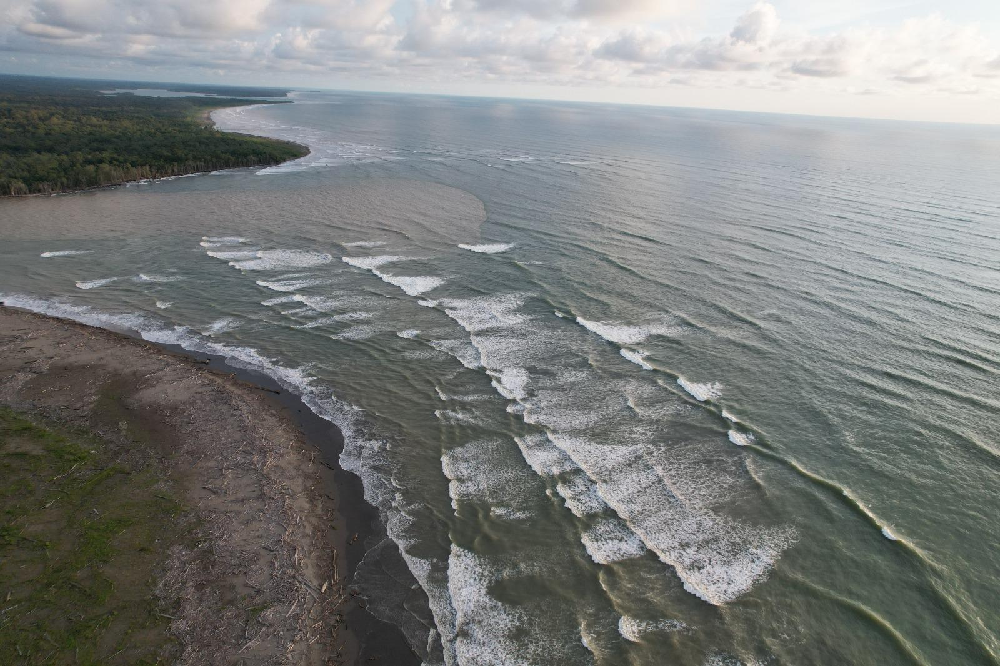
Vista panorámica de la unión del río y el mar en el Bajo Baudó.
Planifica tu viaje a este paraíso chocoano
El Bajo Baudó es accesible para quienes buscan una aventura auténtica. Aquí las principales formas de llegar:
Es recomendable organizar el transporte fluvial con antelación, especialmente en temporada alta.
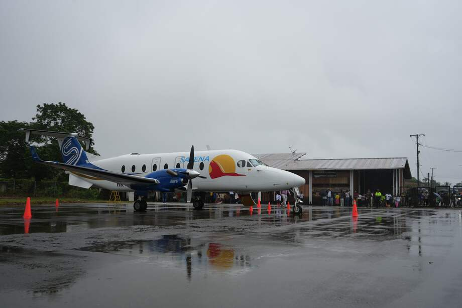
Una vez en el Bajo Baudó, la movilidad es parte de la aventura:
¡Disfruta de paisajes únicos mientras te desplazas por el Bajo Baudó!
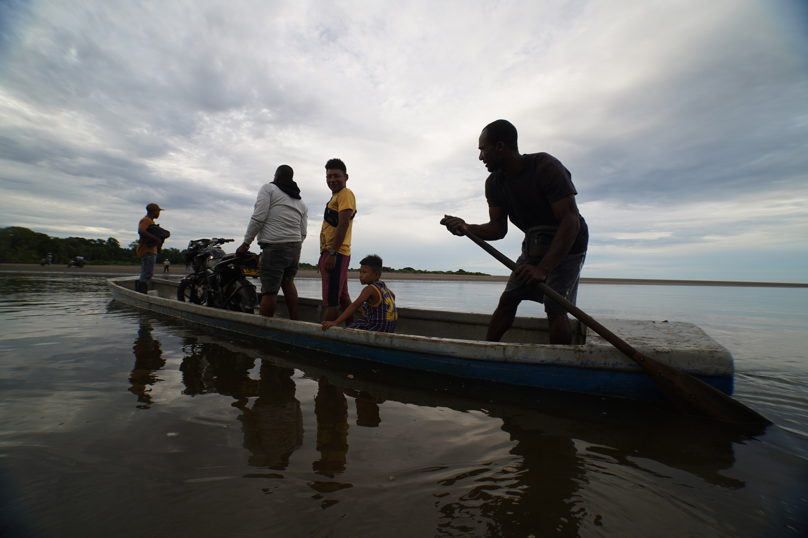
Descubre los tesoros naturales y culturales que hacen del Bajo Baudó un destino único
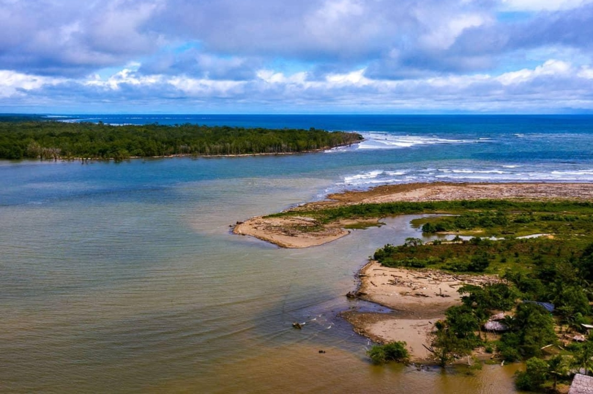
Amplia playa de arena dorada en la desembocadura del río Baudó, frente al océano Pacífico. Belleza virgen, selva tropical y atardeceres espectaculares.
Llevar repelente, protección solar y provisiones. La mejor época para visitar es entre diciembre y marzo.
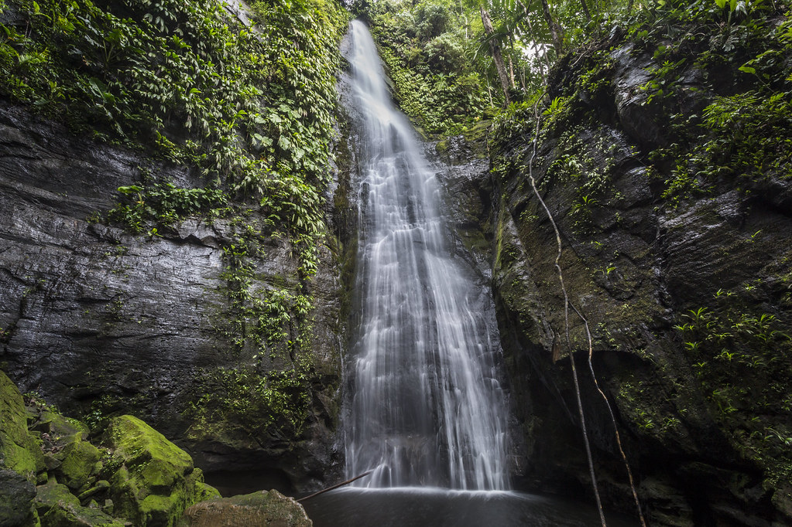
Imponente salto de agua de aguas cristalinas, rodeado de espesa vegetación tropical. Se accede mediante una caminata por senderos selváticos.
Visitar en temporada seca, llevar ropa adecuada para bosque y snacks. Es imprescindible ir con guía local.
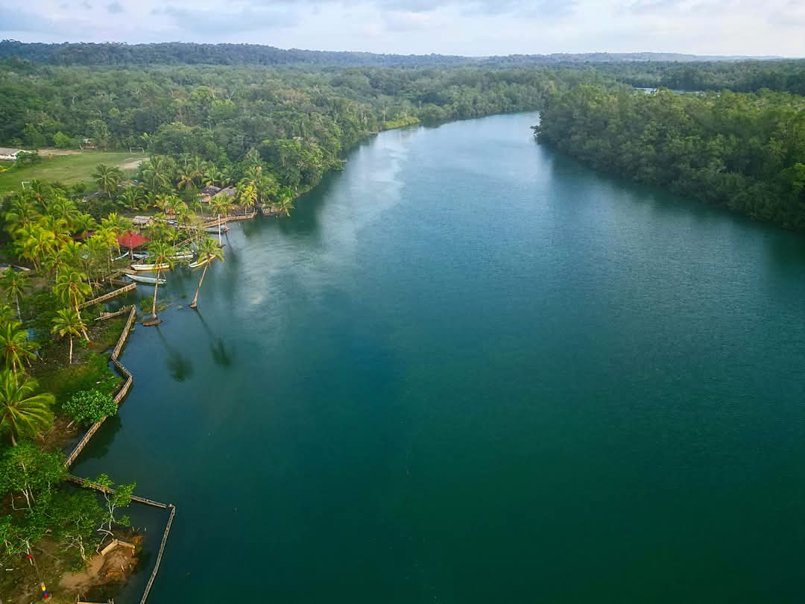
Tesoro emergente del Chocó. Vive una experiencia auténtica junto a comunidades afro e indígenas Wounaan y Emberá, guardianes de tradiciones ancestrales.
Turismo ecológico y comunitario rodeado de selva tropical y aguas cristalinas del Pacífico colombiano.
Un santuario de vida en el corazón del Chocó Biogeográfico
El Bajo Baudó se enmarca en el Chocó Biogeográfico, una de las regiones más biodiversas del planeta.
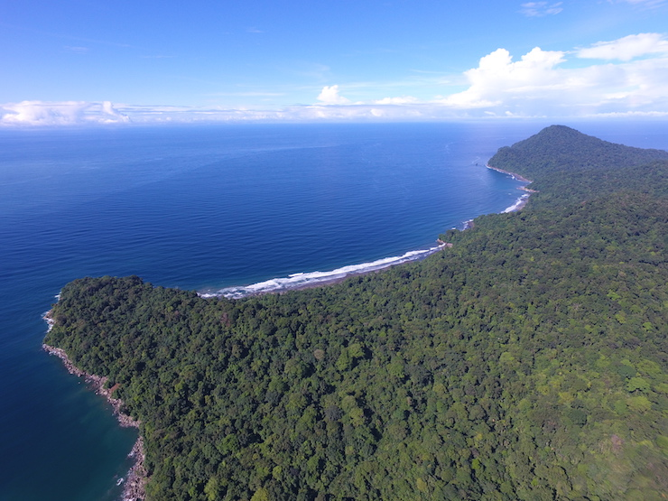
Explorar el Bajo Baudó es una oportunidad única para conectar con la naturaleza virgen:
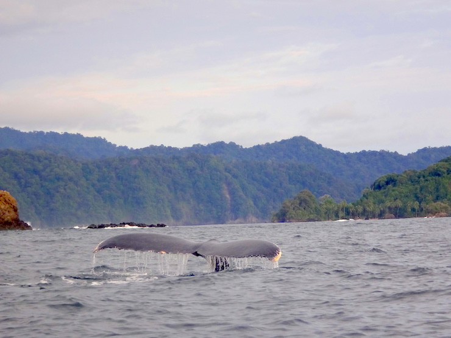
Sumérgete en las tradiciones vivas de la región

La fiesta religiosa y cultural más importante de la región, en honor a la patrona de los pescadores. Explosión de color, música y tradición.
Procesiones, marimba de chonta, tambores y el tradicional bunde. Gastronomía local y artesanías.
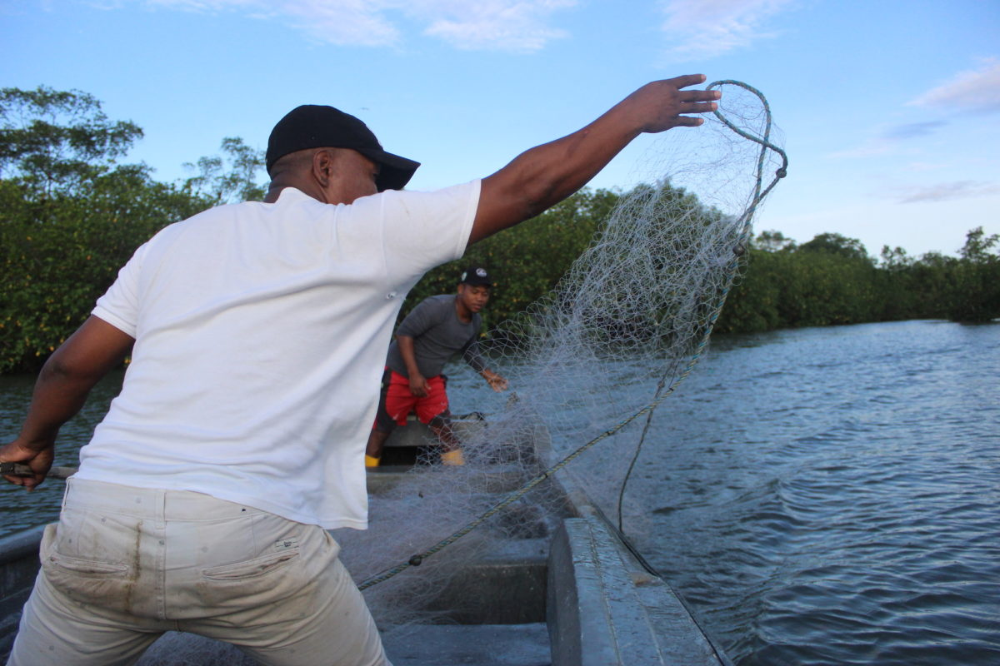
Comparte una jornada en el río o en el mar. Siente la conexión profunda entre el agua, el alimento y la comunidad en una vivencia auténtica.
Arroz con piangua, sancochos frescos y técnicas ancestrales de pesca del Pacífico.
Deléitate con la exquisita gastronomía del Pacífico chocoano
La cocina del Bajo Baudó es un festín de sabores frescos del mar y la selva:
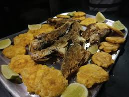
Acompaña tus comidas con bebidas refrescantes y dulces tradicionales:
Pregunta en las comunidades por los mercados locales para una experiencia auténtica.
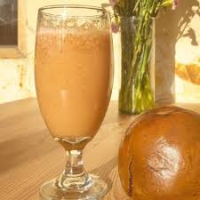